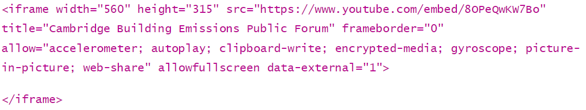
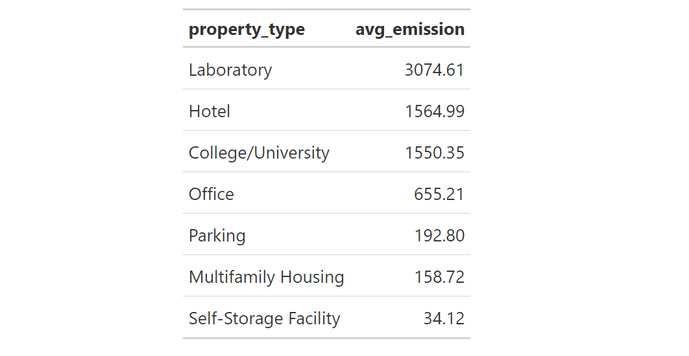

1 + 1[1] 2
11.S954 Applied Data Science for Cities
This practice exercise provides some more structured exploration and practice with Quarto Document (R Markdown format). We will mix Markdown sections with code chunks, build familiarity with basic data types, and experiment with importing a tabular dataset. Because this is an in-class exercise, there is nothing you need to submit—the goal is to apply what we have read and seen in the lectures.
After you download today’s lab folder, launch RStudio by double clicking the “lab1.Rproj” file. Go to File - New File - Quarto Document to create a new Quarto document. The prompt shown below will appear. Type in a document title and your name.
You will see a template file. At the very top of the notebook we have the YAML or “Yet Another Markdown Language” header which begins and ends with three dashes ---. At the very least, it specifies the title, author and output format when the document is rendered. There can be other options specified in the YAML, particularly if you are rendering to a format other than HTML (see the reading from this week).
Let’s add another line to the YAML header:
date: <insert the date that the file is created>.
Below the YAML is where the Markdown sections typically begin. The interface looks pretty much like a Word document. There is a toolbar that allows you to make bold or italic text, create a bullet list, insert a link or an image, insert a code block, etc.
On the very left of this toolbar, click the “Source” button to switch Markdown editing mode. These are sections of text that usually explain or contextualize the code and graphics and are formatted using Markdown syntax. For example:
In 2014, the City of Cambridge passed a local ordinance on building energy use disclosure. Spend a few moments reviewing this website to become familiar with the ordinance (in general). Then, add 3-5 sentences below your YAML section that explain—in your own words—the following:
You may edit your text either in the “Source” or “Visual” panel, or switch them back and forth to get familiar with both. Make sure to make gratuitous use of bold, italics, etc. in your text. You have access to the “Markdown Quick Reference” directly from RStudio (Help - Markdown Quick Reference).
Now you should Save. RStudio will guide you to save the file in the folder where your “Rproj” file is. Then click the “Render” button on top of your toolbar (or click Ctrl+Shift+K) to render the current document. The document is rendered by the knitr package. You can immediately see your nicely formatted document in a web browser.
You’ve probably noticed there is a video on the Cambridge webpage. Let’s assume that the video hosted on that webpage might be useful for others who view our rendered document. We can insert the video in Quarto and it will render in the output when we knit the document. All you need to do is open the embed code for the video itself (i.e., right-click the video - Copy the embed code), then copy-and-paste it into your Markdown section in the “Source” panel.

What we have above is HTML code. A quick explanation without going into lots of detail:
For our purposes, the most important of these attributes is data-external=“1”. This attribute is typically NOT SPECIFIED in the embed code you find on the web by default and YOU WILL NEED TO ADD IT in order for video content to render in your output. This attribute is currently required for the knitr package to properly render video content.
Embed this video in your Markdown section after the introductory sentences you have written. Knit your notebook again and inspect your work.
As you know, the other component of a Quarto Document is code chunks. Recall that code chunks are where the R code lives in a notebook. These are easy to spot as shaded blocks leading by {r} as shown below. (In the Source panel, they always have three backticks followed by {r}).
1 + 1[1] 2In accordance with the ordinance, the City maintains BEUDO data for individual properties from 2015-2021. You can view the data on the Cambridge Open Data Portal. Take a few moments to explore the dataset by scrolling down the page and viewing the “Columns in this Dataset” and “Table Preview” sections in particular. Now download this dataset in CSV format and save it in your “data” folder, which is already created within your project folder.
Insert a code chunk in your Quarto document by going to Code - Insert Chunk. I usually use the shortcut key RStudio provides (Alt+Ctrl+I). Type a few things in the chunk and make it look like the following:
{r label="loadtidyverse", message=FALSE, warning=FALSE}
library(tidyverse)The label option is not required, but can be helpful when you render the notebook (otherwise you will see “unnamed-chunk” in the Render tab next to the Console tab). The other options (described in greater detail here) suppress all warnings and messages that might otherwise appear in the rendered HTML output, making it unnecessarily cluttered and hard to read.
Run this code chunk to load tidyverse package. You can either click the green triangle on the top-right of this chunk, or use Ctrl+Enter.
In your Console, type in ?readr::read_csv and hit Enter. Review the documentation for read_csv paying special attention to the “Arguments” and “Examples” sections of the help page. Note that the double colon above tells us that the function read_csv is located within the readr package, which happens to be part of the tidyverse suite of R packages.
Insert a new code chunk and write a line of code that imports your data stored in the .csv file and assigns it to an object called energy.
Use the colnames() function to get a quick sense of the column names of this dataset.
Run your code chunks. You will be able to see in the rendered output the dimensions of the dataset (always written as rows x columns), the names of the columns, and the data type of each column.
dplyr functionsdplyr is a popular R package for data manipulation and transformation. It provides a set of functions that make it easier to work with data frames and data tables in R. Explore more of dplyr functionality described here and here. We are going to practice some essentials:
Select: selects a subset of columns.While in base R, we do:
dataset[, c("Column1", "Column2")]
In dplyr, we do:
dataset |> select(Column1, Column2)
In other words, we can simply insert the column names into the select function, without worrying about syntax like indexing, concatenation (c()), and the quotation marks.
In the energy dataset, we probably don’t need all of the 46 columns. So we can make it a smaller dataset by specifying a few columns to keep. Insert a new code chunk in your document like this one below. Here we are using the pipe |> operator to “chain together” lines of code. You can type this symbol in using Shift+Ctrl/Command+M.
energy <- energy |>
select(
`Data Year`,
`BEUDO Category`,
Owner,
`Year Built`,
`Primary Property Type - Self Selected`,
`Total GHG Emissions (Metric Tons CO2e)`,
`Total GHG Emissions Intensity (kgCO2e/ft2)`,
Longitude,
Latitude
) Some of the column names are surrounded by backticks (`), that’s because they include special characters or spaces, which deviate from standard naming conventions. The use of backticks is a means of preserving these unique naming attributes. Just keep typing the column names, dplyr will populate the correct names for you.
filter: Select a subset of rowsIn base R, we do this to pick observations by their values:
dataset[dataset$place == “Boston", ]
In dplyr, we do:
dataset |> filter(place == “Boston")
Again, a simpler and more understandable syntax.
Now let’s create a new dataset that only contains energy use records from MIT buildings and that are not missing the total GHG emission attribute. Take a look at how we achieve this using the following code, then proceed to insert a new code chunk in your document like the one below:
mit_energy <- energy |>
filter(Owner == "MASSACHUSETTS INSTITUTE OF TECHNOLOGY") |>
filter(!is.na(`Total GHG Emissions (Metric Tons CO2e)`))mutate: create or modify columnsWe can change the values in a column either based on specified values or certain transformations. For example, below we are showing how to replace the full name of the institute with “MIT”.
mit_energy |> mutate(Owner = "MIT")# A tibble: 891 × 9
`Data Year` `BEUDO Category` Owner `Year Built` Primary Property Type - Sel…¹
<dbl> <chr> <chr> <dbl> <chr>
1 2015 Non-Residential MIT 1994 College/University
2 2017 Residential MIT 1963 College/University
3 2021 Non-Residential MIT 2020 Office
4 2021 Non-Residential MIT 1983 College/University
5 2017 Non-Residential MIT 1916 College/University
6 2021 Non-Residential MIT 1994 College/University
7 2018 Non-Residential MIT 1931 College/University
8 2021 Non-Residential MIT 1956 College/University
9 2020 Residential MIT 1999 Multifamily Housing
10 2016 Residential MIT 1963 College/University
# ℹ 881 more rows
# ℹ abbreviated name: ¹`Primary Property Type - Self Selected`
# ℹ 4 more variables: `Total GHG Emissions (Metric Tons CO2e)` <dbl>,
# `Total GHG Emissions Intensity (kgCO2e/ft2)` <dbl>, Longitude <dbl>,
# Latitude <dbl>You can also use mutate to add new columns to your data frame that are calculated from existing columns. Here we are showing how to create a new column for building ages.
mit_energy |> mutate(Building_Age = 2023 - `Year Built`)# A tibble: 891 × 10
`Data Year` `BEUDO Category` Owner `Year Built` Primary Property Typ…¹
<dbl> <chr> <chr> <dbl> <chr>
1 2015 Non-Residential MASSACHUSET… 1994 College/University
2 2017 Residential MASSACHUSET… 1963 College/University
3 2021 Non-Residential MASSACHUSET… 2020 Office
4 2021 Non-Residential MASSACHUSET… 1983 College/University
5 2017 Non-Residential MASSACHUSET… 1916 College/University
6 2021 Non-Residential MASSACHUSET… 1994 College/University
7 2018 Non-Residential MASSACHUSET… 1931 College/University
8 2021 Non-Residential MASSACHUSET… 1956 College/University
9 2020 Residential MASSACHUSET… 1999 Multifamily Housing
10 2016 Residential MASSACHUSET… 1963 College/University
# ℹ 881 more rows
# ℹ abbreviated name: ¹`Primary Property Type - Self Selected`
# ℹ 5 more variables: `Total GHG Emissions (Metric Tons CO2e)` <dbl>,
# `Total GHG Emissions Intensity (kgCO2e/ft2)` <dbl>, Longitude <dbl>,
# Latitude <dbl>, Building_Age <dbl>There is no <- operator in these two code chunks. We are observing the results but the resulting tables are not saved in an object.
Summarise is usually used in conjunction with group_by because the latter changes the scope from operating on the entire dataset to operating on it group-by-group. Go ahead and run the following code:
mit_energy |>
group_by(`Data Year`) |>
summarise(count = n())# A tibble: 7 × 2
`Data Year` count
<dbl> <int>
1 2015 129
2 2016 134
3 2017 130
4 2018 134
5 2019 111
6 2020 115
7 2021 138We use group_by such that observations (i.e., rows) are grouped according to Data Year, which is the year when the energy record was taken. The result is then passed to summarise to generate a total number of records per year. By default, the n() function creates a new attribute (i.e., column), which we here name as “count”.
Below we are using the same group_by + summarise chain to calculate the average GHG emissions of all buildings, and the average GHG emission intensity (use the column Total GHG Emissions Intensity (kgCO2e/ft2)). Note that we are now giving new names to each of the new columns.
mit_energy |>
group_by(year = `Data Year`) |>
summarise(count = n(),
avg_emission = mean(`Total GHG Emissions (Metric Tons CO2e)`),
avg_intensity = mean(`Total GHG Emissions Intensity (kgCO2e/ft2)`))# A tibble: 7 × 4
year count avg_emission avg_intensity
<dbl> <int> <dbl> <dbl>
1 2015 129 1585. 13.4
2 2016 134 1445. 13.3
3 2017 130 1523. 13.5
4 2018 134 1472. 13.2
5 2019 111 1522. 12.8
6 2020 115 1396. 11.0
7 2021 138 1415. 11.5Insert a few new code chunks below this one to document your code and show your results.
From the mit_energy dataset, create a subset of all non-residential buildings, which were built before the year 2000. (Hint: which function would you use?). How many such buildings are there?
From the mit_energy dataset, compare the GHG emissions by property type (Hint: which column has that information?), and generate a table that shows the following results:

You can create this table mostly by modifying the last code chunk (labeled “annual_mean”), however, there are a few small things you can experiment on:
We are already trying to ask questions and find hints of interesting stories from the dataset, which is what Exploratory Data Analysis (EDA) is all about. If the results so far look interesting/surprising/expected to you, write a few sentences describing what you see from the analysis.
Lastly, we will insert a map to complete your working document! This dataset includes “Longitude” and “Latitude” columns, which I like because it indicates that location information is available and can be visualized.
Add the following code to your document, and you should be able to run it and see a map. (If your R says it can’t find mapview, run the line install.packages("mapview"))
#install.packages("mapview")
library(mapview)
mapview(
mit_energy,
xcol = "Longitude", ycol = "Latitude",
crs = 4326,
grid = FALSE
)
Now Save, Render your document again. You have now created a pretty, multi-media document using R!
------In this lab we have introduced how to create and develop a Quarto Document. We have also introduced some commonly-used dplyr funtions including select, filter, mutate, group_by and summarise. This is the beginning of our data wrangling and leads to the work in Week 2.